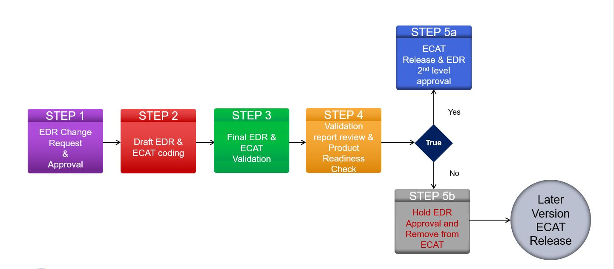
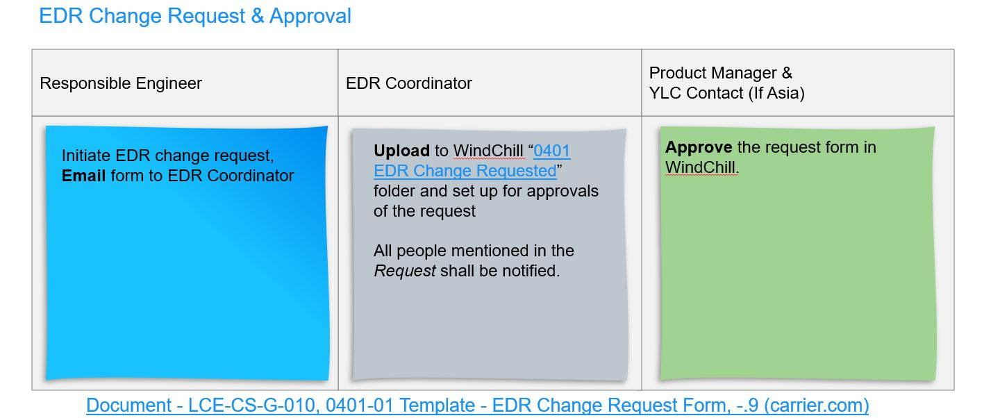
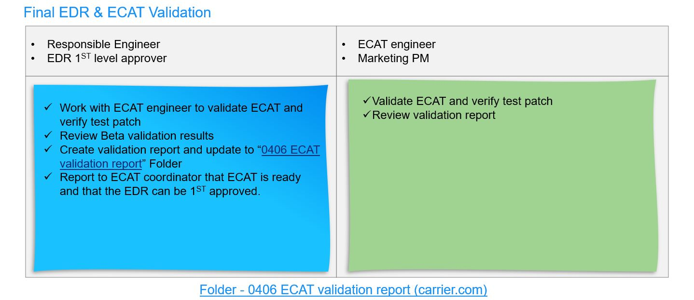
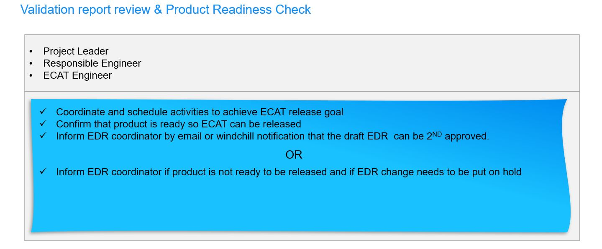
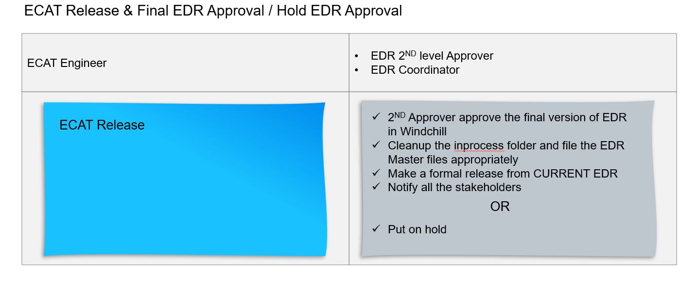

Working Process(EDR Release Process)¶
Standard Workflow:

Step1. EDR Change request form
A step to enable process(Keeps the same):
EDR owner fulfills request form for 17-19-23 EDR change, give an ecat version if you know, or leave it blank if have no idea or it is a regular update, then sent to EDR coordinator - Haiyan Huang for request approve routing.
EDR coordinator sets notification loop as soon as he/she receives request, and put it into specified ecat version folder or “no ecat” folder by identifying ecat version in request form.
Move to next step when received review approval. 
Step 2. Draft EDR preparation
>* EDR coordinator helps set routing in Windchill for 1st level approval. >
EDR owner updates 17-19-23 EDR files in “Change in process” folder by judging what changes:
Method only: Update necessary 17-19-23 word file pages, with a change record in first page. Do not need change 17-19-23 excel tube data.
Data table only: Add / remove / edit tubes in excel EDR, with detailed change record in first sheet. Do not need change 17-19-23 word file. An excel template can be found in Windchill
Add a new tube: Add change record, and clean all data content in excel template.Then put necessary tube information into related data sheet, one or more sheets are allowed. When it comes to official release in future, EDR coordinator scans and compares sheet by sheet, if tube name is unique, will be concatenated in the end row with the guidance of change record.
Remove a tube: Add change record, clean excel template data content, then copy all tube parameters needed in all sheets in “Current folder” file, and paste to draft excel EDR, with strikethrough. When it comes to official release in future, EDR coordinator checks this obsoleted tube sheet by sheet, if matches, entire row will be deleted by using strikethrough.
Edit a tube: Add change record, clean excel template data content if there is, then add tubes information into draft excel version EDR. When it comes to official release in future, EDR coordinator will compare tube name sheet by sheet, those rows with same tube name will be replaced with this new ones.
Both method and data: Update both 17-19-23 word and excel tube EDR, with their change record. Lack of necessary information in sheets will not block EDR release process, but may cause calculation in BOLT and ecat fails.
Step 3. ECAT validation:
EDR owner executes tube performance validation and prepares validation report.
Get 1st level approve; 
Step 4. Product Readiness Check:
Project leaders confirms validation results;
Ask EDR coordinator to proceed to 2nd level approve. 
Step 5. EDR release:
Received 2nd level approve;
EDR coordinator creates files in master folder by adjusting format needed based on draft EDR.
EDR coordinator creates files in current folder by converting to pdf version based on master EDR.
Send out notification emails to let people knows the updates. 